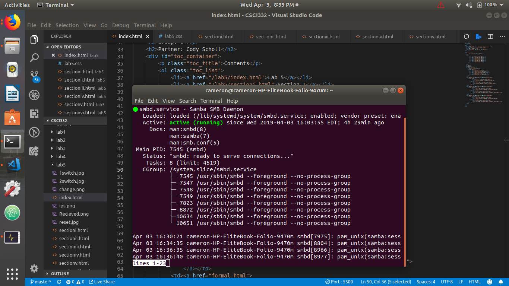
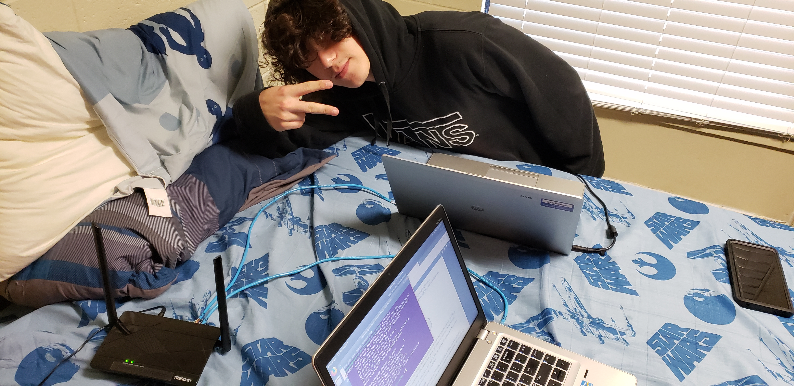
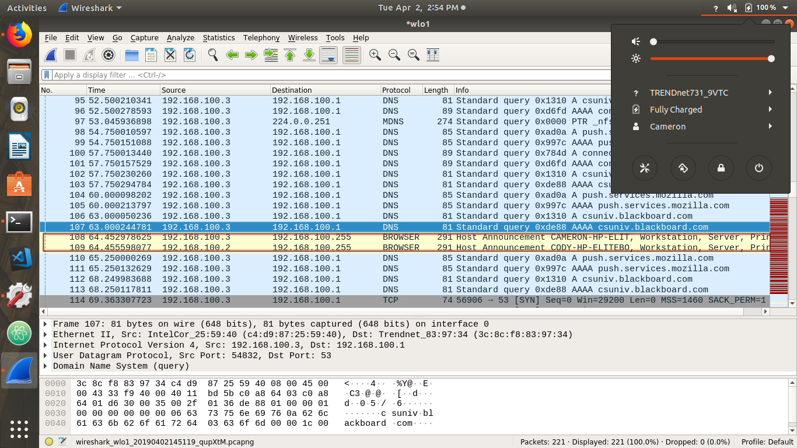

|  | This picture is of the status of the samba server on my laptop. it shows that it is active and connected. |
| Step 1: Click on the file explorer Icon. Step 2: Click on “Other Locations”and choose your partner’s Samba share. Step 3: Right click on the share. In this case, it is called “public”. Choose “Open With Files”. Step 4: Click “Connect”. Step 5: Now you are connected to your partner’s computer. You can now share files between each other. That's it! You have now created a shared public folder, accessible from local network for all users. |
|  | This is the picture of the setup. the switch has 2 of the cables made in class connected to the LAN2 and the LAN3 ports then connected to the port on the 2 laptops. |
|
|
This is a picture of the configuration page of the router that allows you to select the IP range, NET mask, and the router's IP. |
|  | This picture shows the IP address of mine and my partner's laptops. I used wireshark to see the IP addresses. |
|
|
This shows the transmission of the 4GB file which is made of 2 Ubuntu ISO files. There was a transfer rate of about 25Mbps. |